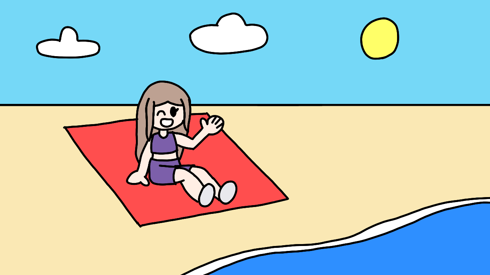

Welcome to Lily's website
This webstie loads well on a computer and on a mobile phone. It might not load well on a 3DS, tho.
Go to home pageThis webstie loads well on a computer and on a mobile phone. It might not load well on a 3DS, tho.
Go to home pageThis theme selector was possible with help from Fossheim's theme selector tutorial.
JavaScript is necessary for the theme switcher to work.